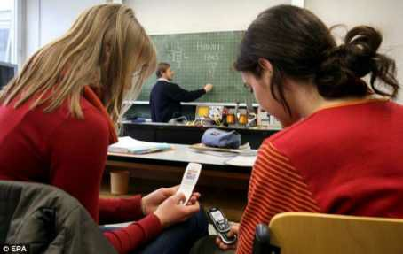

We are living in the era of advanced technology. Every part of our daily life is related to technology in one or other way.
When compared with olden days, we are having better facilities and even better luxuries with the help of increased technology.
Impact of the mobile technology on:
- Learning
With the help of internet, we are able to learn new things and online courses etc. which enhances our learning ability.
On the other hand, some students carry technical gadgets to classroom and disturb the classroom learning.
- Relationship
Many of the young generation socialize themselves through mobile technology and share their common feelings which lead themselves getting into relationship.
This has become a main source to know each other.But the same technology is creating rivalry between best friends and couples are getting divorced by revealing privacy.
- Family
With the help of mobile technology we are able to talk to our friends and relatives who are living far from us which were impossible during olden times.
It has enabled face to face communication. On the other hand, Instead of taking care personally we are sending SMS or giving a call on important occasions which were attended personally in olden days.
Technology is like a coin which has both positive and negative sides. We are the deciders and we have to choose how to use it.
The usage of technology for over exploitation of resources should be always avoided.
If we use it for positive things, it will have positive effect of our lives and vice versa.
Nobody would oppose the development of technologies in any sector but
the developments should be in a positive way and they should not have any negative impact on present or future generations.
"Ethics change with technology"